Chess Pressure Analysis
A Python data pipeline that parses chess games and models board control as an 8×8 pressure tensor — visualized as heatmaps evolving turn by turn.
Replace this text with your own explanation of the idea, what engineering concept inspired it, and what you were trying to find out about your own games.
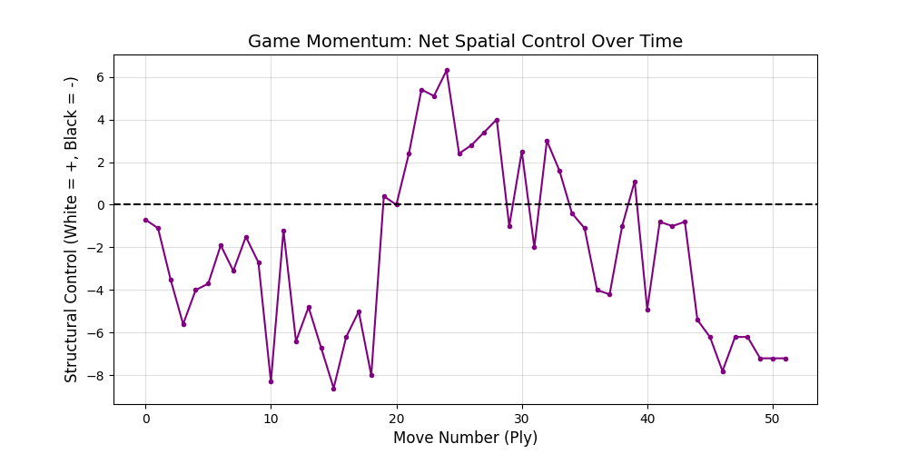
Pressure graphed over the course of a game. Positive is white pressure and negative is black presssure.
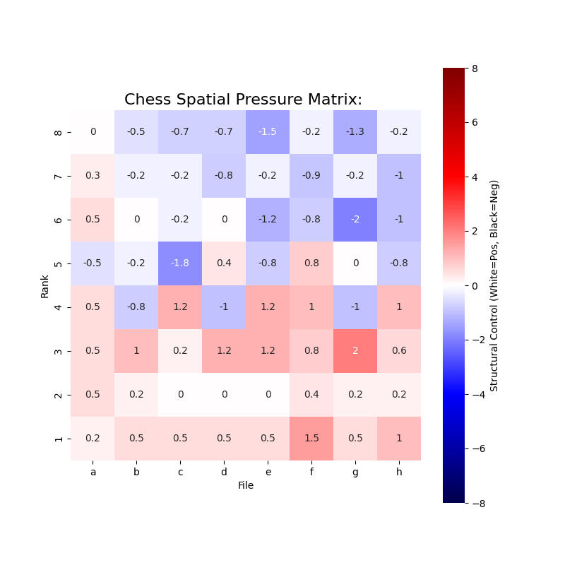
Initial heatmaps looked like this. I realized I needed to tune the pressure to more accurately capture the state of the board. See next
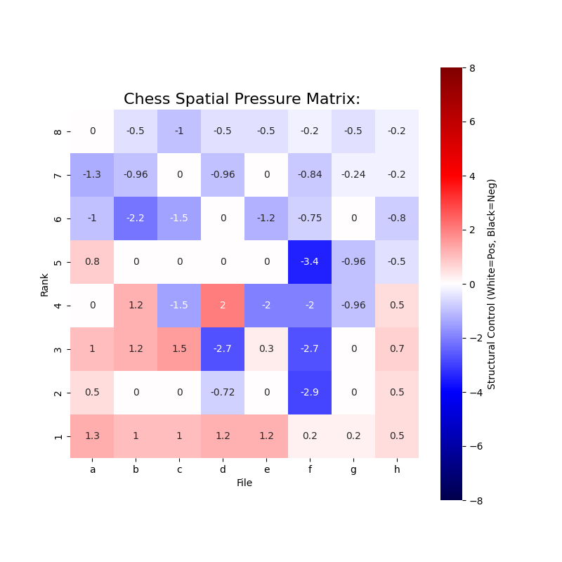
Another example of a heatmap mid-game. I started applying weights to different squares. This is taken at ply 47
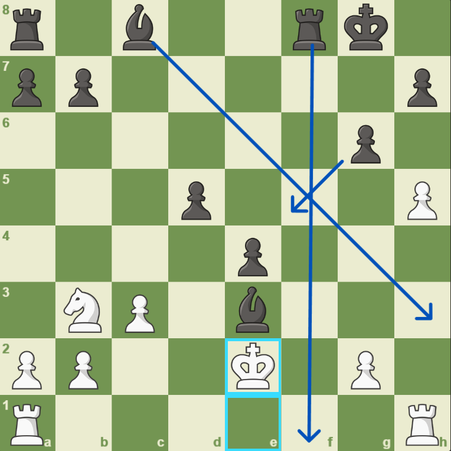
To give an idea of what the board looks like compared to the heatmap, this is the same ply
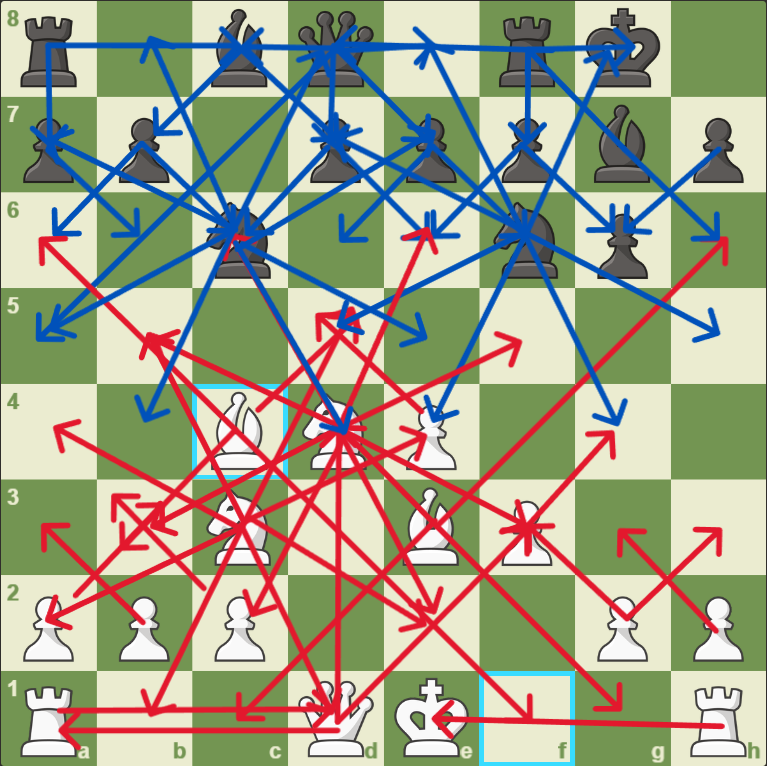
This is another visual of what I'm actually plotting, minus the weights that are applied.
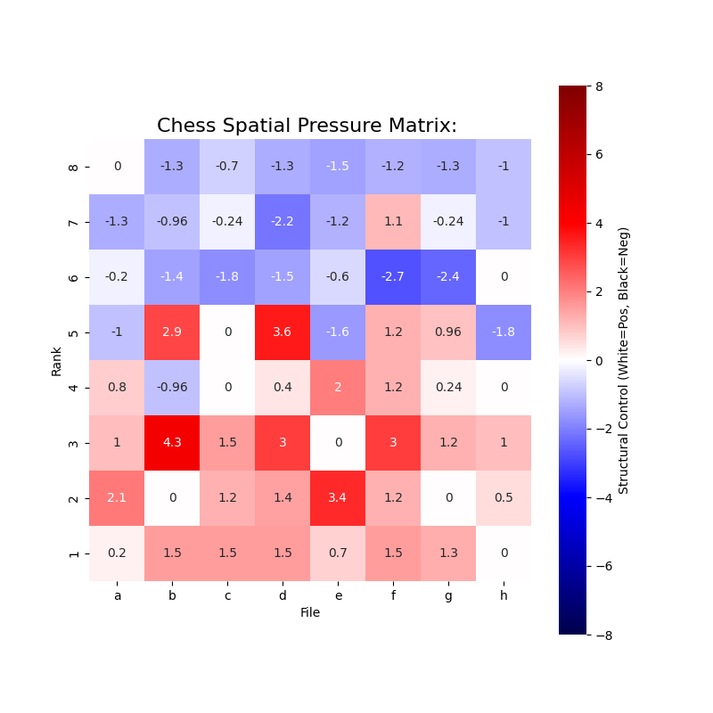
This is from ply 15 from the same game above and the heatmap of the annotated board.
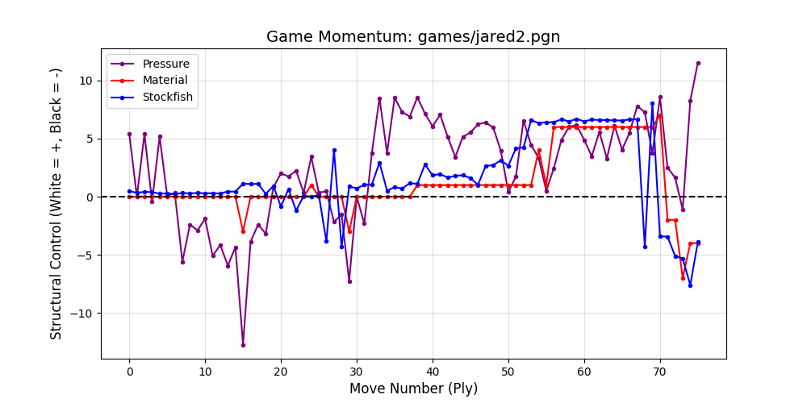
I started thinking about how to evaluate this metric, so I added a stockfish evaluation at each move, along with the material balance of the board.
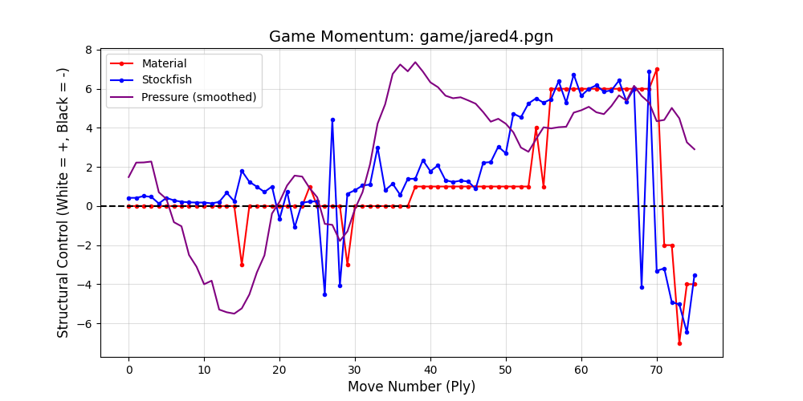
Smoothed pressure line to avoid noise from trades.
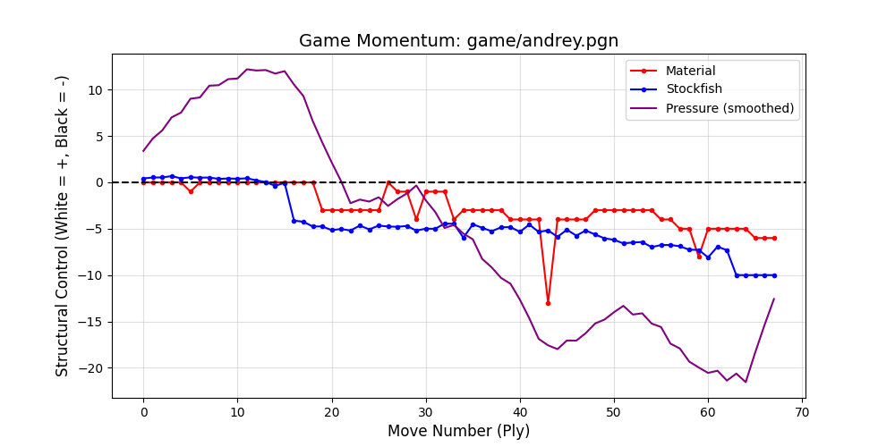
It's very interesting how different the graph looks when you analyze a GM playing. The material and stockfish evaluation hover around 0.
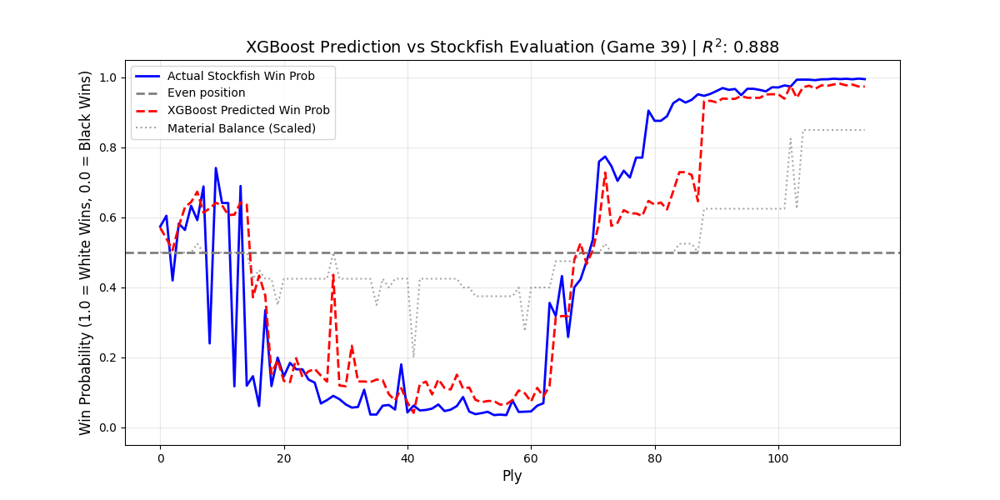
I implemented an XGBoost model to try to predict win probability based off material and pressure
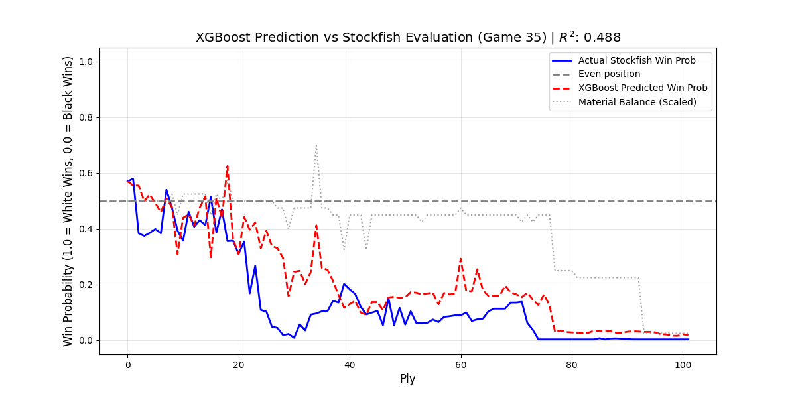
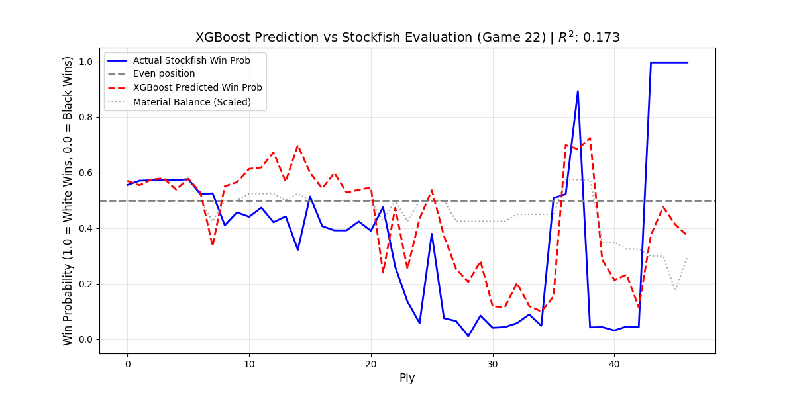